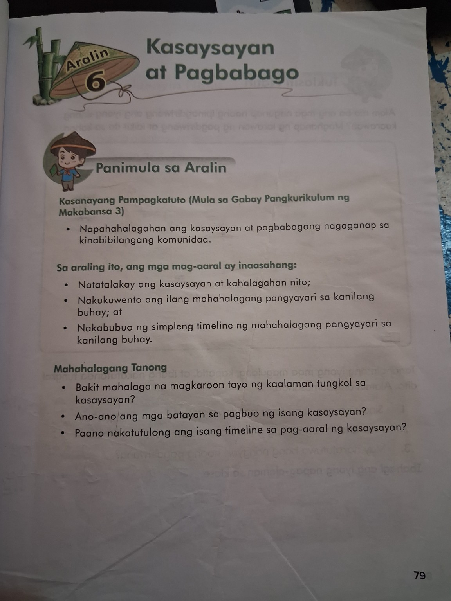
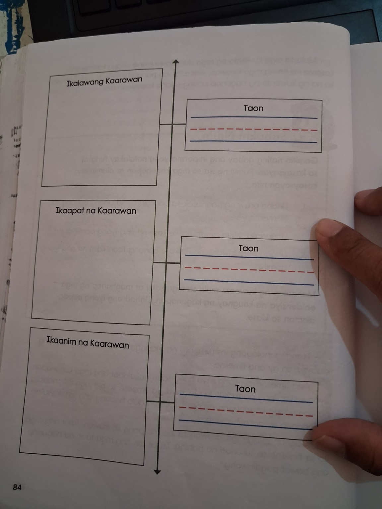
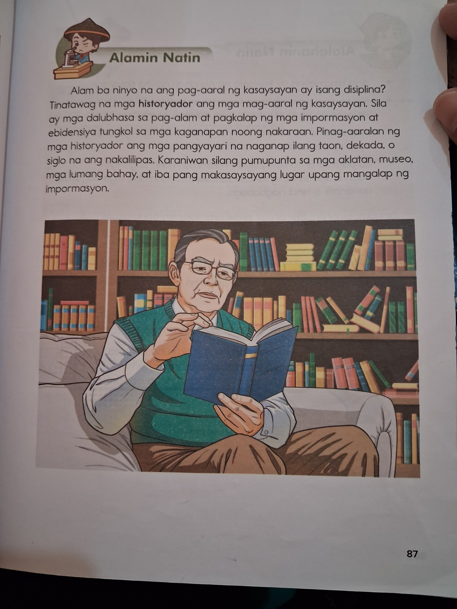

Ikaw noon at ngayon
Maaaring magbago ang iyong hitsura, kakayahan, hilig, at kaalaman habang lumilipas ang panahon.
English: Change can happen as time passes.
Alamin kung ano ang kasaysayan, paano tayo naghahanap ng ebidensiya tungkol sa nakaraan, paano gumawa ng timeline, at paano natin nakikita ang mga pagbabago at mga bagay na nananatili.
Ang kasaysayan ay tungkol sa mga pangyayaring naganap sa nakaraan. May mga alaala at ebidensiyang tumutulong sa atin na malaman ang mga ito.
Maaaring magbago ang iyong hitsura, kakayahan, hilig, at kaalaman habang lumilipas ang panahon.
English: Change can happen as time passes.
Ang larawan, video, regalo, card, at kuwento ng pamilya ay maaaring makatulong sa pag-alala ng isang pangyayari.
English: Evidence helps us learn about the past.
Ang timeline ay naglalagay ng mga pangyayari ayon sa kanilang pagkakasunod-sunod.
English: A timeline puts events in order.
Matuto sa maliliit na bahagi. Bawat bahagi ay may paliwanag, halimbawa, at mabilis na check.
Ang kasaysayan ay isang kuwento ng mga naganap sa nakaraan. Maaaring ito ay maikli o mahaba. Maaari nating pag-aralan ang mga pangyayaring naganap sa isang araw, ilang araw, isang dekada, o mas mahabang panahon.
English: History is the story of events that happened in the past.
Sa pagbuo ng kuwento ng nakaraan, kailangan natin ng impormasyon o datos mula sa mga saksi at mga bagay na kaugnay sa pangyayari. Maaaring gamitin ang mga larawan, dokumento, video, regalo, card, at iba pang patunay o ebidensiya.
English: Evidence gives information about what happened.
Ang timeline ay isang linya kung saan nakalapat ang mga kaganapan ayon sa kanilang pagkakasunod-sunod. Karaniwang inilalagay ang unang pangyayari sa itaas at ang pinakahuling pangyayari sa ibaba sa halimbawa ng aklat.
English: A timeline shows events in sequence.
Maaaring magbago ang hitsura, katawan, hilig, kaalaman, o talento. Ngunit may ilang bagay na maaaring patuloy na nananatili, tulad ng pangalan, ilang ugali, o paboritong bagay o gawain.
English: Some things change, while some things stay the same.
Ang mga nag-aaral ng kasaysayan ay tinatawag na historyador. Sila ay dalubhasa sa pag-alam at pagkolekta ng impormasyon at ebidensiya tungkol sa mga kaganapan noong nakaraan. Maaari silang pumunta sa mga aklatan, museo, lumang bahay, at iba pang makasaysayang lugar upang mangalap ng impormasyon.
English: Historians study the past using information and evidence.
Ang mga pahina ng aklat na ibinigay ay nagsisilbing pangunahing sanggunian sa araling ito.



Tingnan muna kung paano ko aayusin ang mga pangyayari.
Hanapin ang mga pangyayari.
Alamin kung alin ang nauna at alin ang sumunod.
Ilagay ang mga ito sa wastong pagkakasunod-sunod.
Hint: Pumili ng bagay na direktang may kaugnayan sa pangyayari.
Subukan nang mag-isa. Kapag nagkamali, may clue para matuto at sumubok muli.
Ang pagkakamali ay pagkakataong matuto. Balikan ang clue, tingnan ang halimbawa, at subukan muli.
Mga larong may malinaw na layunin sa pagkatuto.
Piliin ang ebidensiyang pinakaangkop sa pangyayari.
I-tap ang mga pangyayari sa tamang pagkakasunod-sunod.
Sabihin kung ang sitwasyon ay pagbabago o bagay na nananatili.
Itugma ang konsepto sa tamang paliwanag.
Aling ebidensiya ang pinakamalinaw kung gusto mong malaman kung sino ang dumalo sa isang birthday?
Ilapat ang natutuhan sa mga sitwasyong pamilyar sa isang batang tulad mo.
Bagong mga tanong para makita kung kaya mong gamitin ang mga pangunahing konsepto.